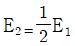
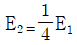
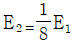
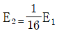
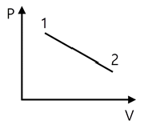
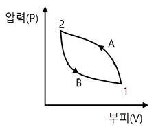
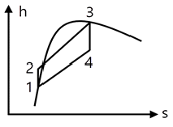
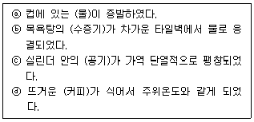
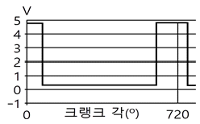
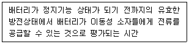

자동차정비기사 (2021-05-15 기출문제)
1과목: 일반기계공학
1. 중실축에서 동일한 비틀림 모멘트를 작용시킬 때 지름이 2d에서 저장되는 탄성에너지가 E2, 지름이 d에서 저장되는 탄성에너지가 E1 일 때, E1과 E2의 관계로 옳은 것은? (단, 지름 외의 조건은 동일하다.)




(정답률: 49%)

2. 왕복 펌프의 과잉 배수(송출) 체적비에 대한 설명으로 옳은 것은?
- 배수곡선의 산수가 많으면 많을수록 과잉 배수 체적비의 값은 크다.
- 과잉 배수 체적비가 크다는 것은 유량의 맥동이 작다는 것을 의미한다.
- 평균 배수량을 넘어서 배수되는 양과 행정용적과의 곱으로 정의한다.
- 배수량 변동의 정도를 나타내는 척도이다.
(정답률: 57%)
3. 주물에 사용되는 주물사의 구비조건으로 틀린 것은?
- 내화성이 클 것
- 통기성이 좋을 것
- 열전도성이 높을 것
- 주물 표면에서 이탈이 용이할 것
(정답률: 66%)
4. 펌프나 관로에서 숨을 쉬는 것과 비슷한 진동과 소음이 발생하는 현상으로 송출압력과 유량 사이에 주기적인 변화가 발생하는 것은?
- 서징
- 채터링
- 베이퍼록
- 캐비테이션
(정답률: 68%)
5. 코일 스프링의 처짐량에 관한 설명으로 옳은 것은?
- 코일 스프링 권수에 반비례한다.
- 코일 스프링의 전단탄성계수에 반비례한다.
- 코일 스프링에 작용하는 하중의 제곱에 비례한다.
- 코일 스프링 소선 지름의 제곱에 비례한다.
(정답률: 27%)
6. 서브머지드 아크 용접에 대한 설명으로 옳은 것은?
- 아크가 보이지 않는 상태에서 용접이 진행
- 불활성 가스 대신에 탄산가스를 이용한 용극식 방식
- 텅스텐, 몰리브덴과 같은 대기에서 반응 하기 쉬운 금속도 용접 기능
- 아크열에 의한 순간적인 국부 가열이므로 용접 응력이 대단히 작음
(정답률: 27%)
7. 드릴로 뚫은 구멍의 내면을 매끈하고 정밀하게 가공하는 것은?
- 줄 가공
- 탭 가공
- 리머 가공
- 다이스 가공
(정답률: 43%)
8. 다음 중 각도 측정기는?
- 사인바
- 마이크로미터
- 하이트게이지
- 버니어캘리퍼스
(정답률: 79%)
9. 유압 펌프 중 용적형 펌프가 아닌 것은?
- 기어 펌프
- 베인 펌프
- 터빈 펌프
- 피스톤 펌프
(정답률: 50%)
10. 합금원소 중 구리(Cu)가 탄소강의 성질에 미치는 영향으로 틀린 것은?
- 내식성을 향상시킨다.
- A1변태점을 저하시킨다.
- 결정입자를 조대화시킨다.
- 인장강도, 경도, 탄성한도 등을 증가시킨다.
(정답률: 40%)
11. 축 설계에 있어서 고려할 사항이 아닌 것은?
- 강도
- 응력집중
- 열응력
- 전기 전도성
(정답률: 69%)
12. 전위기어에 대한 설명으로 틀린 것은?
- 이의 강도를 개선한다.
- 이의 언더컷을 막는다.
- 중심거리를 조절할 수 있다.
- 기준 래크의 기준 피치선이 기어의 기준 피치원에 접하는 기어이다.
(정답률: 35%)
13. 길이 4m인 단순보의 중앙에 1000N의 집중하중이 작용할 때, 최대 굽힘 모멘트(N·m)는?
- 250
- 500
- 750
- 1000
(정답률: 10%)
14. 비절삭 가공에 해당하는 것은?
- 주조
- 호닝
- 밀링
- 보링
(정답률: 36%)
15. 나사의 종류 중 정밀기계 이송나사에 사용되는 것은?
- 4각나사
- 볼나사
- 너클나사
- 미터가는나사
(정답률: 35%)
16. 새들 키라고도 하며, 축에 키 홈 가공을 하지 않고 보스에만 키 홈을 가공한 것은?
- 묻힘 키
- 반달 키
- 안장 키
- 접선 키
(정답률: 37%)
17. 6ㆍ4 황동에 Sn을 1% 정도 첨가한 합금으로 선박 기계용, 스프링용, 용접용 재료 등에 많이 사용되는 특수 황동은?
- 쾌삭 황동
- 네이벌 황동
- 고강도 황동
- 알루미늄 황동
(정답률: 43%)
18. 두 축이 평행하고 축의 중심선이 약간 어긋났을 때 각속도의 변동 없이 토크를 전달하는데 사용하는 축 이음은?
- 올덤 커플링
- 머프 커플링
- 유니버설 조인트
- 플렉시블 커플링
(정답률: 27%)
19. 연강봉의 단면적이 40mm2, 온도변화가 20℃일 때, 20kN의 힘이 필요하다면, 선팽창계수는 약 얼마인가? (단, 재료의 세로탄성계수는 210GPa이다.)
- 0.83×10-5
- 1.19×10-4
- 1.51×10-5
- 1.9×10-4
(정답률: 36%)
20. 인장강도가 200N/m2인 연강봉을 안전하게 사용하기 위한 최대허용응력(Pa)은? (단, 봉의 안전율은 4로 한다.)
- 20
- 50
- 100
- 200
(정답률: 70%)
2과목: 기계열역학
21. 보일러, 터빈, 응축기, 펌프로 구성되어 사이클이다. 있는 증기원동소가 있다. 보일러에서 2500㎾의 열이 발생하고 터빈에서 550㎾의 일을 발생시킨다. 또한, 펌프를 구동하는데 20㎾의 동력이 추가로 소모 된다면 응축기에서의 방열량은 약 몇 ㎾인가?
- 980
- 1930
- 1970
- 3070
(정답률: 18%)
22. 압력 100kPa, 온도 20℃인 일정량의 이상기체가 있다. 압력을 일정하게 유지하면서 부피가 처음 부피가 2배가 되었을 때 기체의 온도는 약 몇 ℃가 되는가?
- 148
- 256
- 313
- 586
(정답률: 20%)
23. 질량이 5㎏인 강제 용기 속에 물이 20L 들어있다. 용기와 물이 24℃인 상태에서 이 속에 질량이 5㎏이고 온도가 180℃인 어떤 물체를 넣었더니 일정 시간 후 온도가 35℃가 되면서 열평형에 도달하였다. 이때 이 물체의 비열은 약 몇 kJ/(㎏·K) 인가? (단, 물의 비열은 4.2kJ/(㎏·K), 강의 비열은 0.46kJ/(㎏·K)이다.)
- 0.88
- 1.12
- 1.31
- 1.86
(정답률: 17%)
24. 어떤 열기관이 550K의 고열원으로부터 20kJ의 열량을 공급받아 250K의 저열원에 14kJ의 열량을 방출할 때 이 사이클의 Clausius 적분값과 가역, 비가역 여부의 설명으로 옳은 것은?
- Clausius 적분값은 -0.0196kJ/K이고 가역 사이클이다.
- Clausius 적분값은 -0.0196kJ/K이고 비가역 사이클이다.
- Clausius 적분값은 0.0196kJ/K이고 가역 사이클이다.
- Clausius 적분값은 0.0196kJ/K이고 비가역 사이클이다.
(정답률: 59%)
25. 시스템 내의 임의의 이상기체 1㎏이 재워져 있다. 이 기체의 정압비열은 1.0kJ/(㎏·K)이고, 초기 온도가 50℃인 상태에서 323kJ의 열량을 가하여 팽창시킬 때 변경 후 체적은 변경 전 체적의 약 몇 배가 되는가? (단, 정압과정으로 팽창한다.)
- 1.5 배
- 2배
- 2.5배
- 3배
(정답률: 30%)
26. 어느 왕복동 내연기관에서 실린더 안지름이 6.8cm, 행정이 8cm일 때 평균유효압력은 1200kPa이다. 이 기관의 1행정당 유효 일은 약 몇 kJ인가?
- 0.09
- 0.15
- 0.35
- 0.48
(정답률: 20%)
27. 복사열을 방사하는 방사율과 면적이 같은 2개의 방열판이 있다. 각각의 온도가 A 방열판은 120℃, B 방열판은 80℃일 때 두 방열판의 복사 열전달량(QA/QB)비는?
- 1.08
- 1.22
- 1.54
- 2.42
(정답률: 40%)
28. 완전히 단열된 실린더 안의 공기가 피스톤을 밀어 외부로 일을 하였다. 이때 외부로 행한 일의 양과 동일한 값(절대값 기준)을 가지는 것은?
- 공기의 엔탈피 변화량
- 공기의 온도 변화량
- 공기의 엔트로피 변화량
- 공기의 내부에너지 변화량
(정답률: 22%)
29. 오토 사이클로 작동되는 기관에서 실린더의 극간 체적(clearance volume)이 행정 체적(stroke volume)의 15%라고 하면 이론 열효율은 약 얼마인가? (단, 비열비 k=1.4이다.)
- 39.3%
- 45.2%
- 50.6%
- 55.7%
(정답률: 13%)
30. 이상적인 오토사이클의 열효율이 56.5%이라면 압축비는 약 얼마인가? (단, 작동 유체의 비열비는 1.4로 일정하다.)
- 7.5
- 8.0
- 9.0
- 9.5
(정답률: 24%)
31. 카르노사이클로 작동되는 열기관이 200kJ의 열을 200℃에서 공급받아 20℃에서 방출한다면 이 기관의 일은 약 얼마인가?
- 38kJ
- 54kJ
- 63kJ
- 76kJ
(정답률: 16%)
32. 4㎏의 공기를 온도 15℃에서 일정 체적으로 가열하여 엔트로피가 3.35kJ/K 증가하였다. 이때 온도는 약 몇 K인가? (단, 공기의 정적비열은 0.717kJ/(㎏·K)이다.)
- 927
- 337
- 533
- 483
(정답률: 12%)
33. 열역학 제2법칙과 관계된 설명으로 가장 옳은 것은?
- 과정(상태변화)의 방향성을 제시한다.
- 열역학적 에너지의 양을 결정한다.
- 열역학적 에너지의 종류를 판단한다.
- 과정에서 발생한 총 일의 양을 결정한다.
(정답률: 64%)
34. 유리창을 통해 실내에서 실외로 열전달이 일어난다. 이때 열전달량은 약 몇 W인가? (단, 대류열전달계수는 50W/(m2·K), 유리창 표면온도는 25℃, 외기온도는 10℃, 유리창 면적은 2m2이다.)
- 150
- 500
- 1500
- 5000
(정답률: 9%)
35. 실린더에 밀폐된 8㎏의 공기가 그림과 같이 압력 P1 = 800kPa, 체적 V1 = 0..27m3에서 P2 = 350kPa, V2 = 0.80m3으로 직선 변화 하였다. 이 과정에서 공기가 한 일은 약 몇 kJ인가?

- 3⑤
- 334
- 362
- 390
(정답률: 14%)
36. 상태 1에서 경로 A를 따라 상태 2로 변화하고 경로 B를 따라 다시 상태 1로 돌아오는 가역사이클이 있다. 아래의 사이클에 대한 설명으로 틀린 것은?

- 사이클 과정 동안 시스템의 내부에너지 변화량은 0이다.
- 사이클 과정 동안 시스템은 외부로부터 순(net) 일을 받았다.
- 사이클 과정 동안 시스템의 내부에서 외부로 순(net) 열이 전달되었다.
- 이 그림으로 사이클 과정 동안 총 엔트로피 변화량을 알 수 없다.
(정답률: 38%)
37. 기체상수가 0.462kJ(㎏·K)인 수증기를 이상기체로 간주할 때 정압비열(kJ/(㎏·K))은 약 얼마인가? (단, 이 수증기의 비열비는 1.33이다.)
- 1.86
- 1.54
- 0.64
- 0.44
(정답률: 19%)
38. 그림과 같은 Rankine 사이클의 열효율은 약 얼마인가? (단, h는 엔탈피, s는 엔트로피를 나타내며, h1 = 191.8kJ/㎏, h2 = 193.8kJ/㎏, h3 = 2799.5kJ/㎏, h4 = 2007.5ld/㎏이다.)

- 30.3%
- 36.7%
- 42.9%
- 48.1%
(정답률: 25%)
39. 냉동기 냉매의 일반적인 구비조건으로서 적합하지 않은 것은?
- 임계 온도가 높고, 응고 온도가 낮을 것
- 증발열이 작고, 증기의 비체적이 클 것
- 증기 및 액체의 점성(점성계수)이 작을 것
- 부식성이 없고, 안정성이 있을 것
(정답률: 28%)
40. 다음 4가지 경우에서 ( ) 안의 물질이 보유한 엔트로피가 증가한 경우는?

- ⓐ
- ⓑ
- ⓒ
- ⓓ
(정답률: 34%)
3과목: 자동차기관
41. 전자제어 가솔린엔진에서 가속 및 감속 시에 연료량 보정을 하지 않았을 때 공연비에 대한 설명으로 옳은 것은?
- 가속 및 감속 시 모두 희박해진다.
- 가속 및 감속 시 모두 농후해진다.
- 가속 시는 농후해지고, 감속 시는 희박해 진다.
- 가속 시는 희박해지고, 감속 시는 농후해 진다.
(정답률: 90%)
42. 자동차 엔진이 과냉되었을 때에 대한 설명으로 틀린 것은?
- 연료가 쉽게 기화하지 못한다.
- 연료의 응결로 연소가 불량해진다.
- 엔진 오일의 점도가 높아져 시동할 때 회전저항이 커진다.
- 냉각수의 순환이 불량해지고 금속의 산화가 촉진된다.
(정답률: 86%)
43. 기관 연소 해석 장치의 압력파형으로부터 얻을 수 있는 정보가 아닌 것은?
- 열 발생률
- 연료의 옥탄가
- 평균가스 온도
- 최대 압력 상승률
(정답률: 87%)
44. 자동차 엔진의 가변 흡입 장치에 대한 설명으로 틀린 것은?
- 저속과 고속에서의 기관 회전력을 향상시킨다.
- 고속에서는 제어밸브를 열어 흡기다기관의 길이를 길게 한다.
- 저속에서는 제어밸브를 조정하여 공기의 관성력을 크게 한다.
- 기관 회전속도에 따라 흡입공기 흐름의 회로를 자동으로 조정하는 것이다.
(정답률: 52%)
45. 디젤 사이클의 이론 열효율에 대한 설명 으로 옳은 것은? (단, 비열비는 일정하다고 가정한다.)
- 압축비가 커질수록 열효율은 감소한다.
- 압축비가 일정할 때 차단비가 커질수록 열효율은 크게 된다.
- 압축비는 작아지고 차단비가 커질수록 열효율은 크게 된다.
- 압축비가 일정할 때 차단비가 작을수록 열효율은 크게 된다.
(정답률: 46%)
46. 전자제어 디젤 엔진의 연료장치 중 고압 연료 펌프에서 공급된 높은 압력의 연료가 저장되는 부분은?
- 프라이밍 펌프
- 연료 필터
- 1차 연료펌프
- 커먼레일
(정답률: 57%)
47. 크랭크축의 기능으로 틀린 것은?
- 엔진의 좌·우 진동을 감소시킨다.
- 커넥팅로드에서 전달되는 힘을 회전모멘트로 변화시킨다.
- 동력행정 이외의 행정 시에는 역으로 피스톤에 운동을 전달한다.
- 회전모멘트의 일부를 이용하여 오일펌프, 밸브기구, 발전기 등을 구동시킨다.
(정답률: 84%)
48. 엔진 컴퓨터에 흡입 공기량 신호를 보내어 기본 연료 분사량을 결정하게 해주는 것은?
- 산소 센서
- 공기 유량 센서
- 가스 압력 센서
- 공기 온도 센서
(정답률: 68%)
49. 전자제어 가솔린엔진의 연료장치에서 인젝터 유효 분사시간에 대한 설명으로 옳은 것은?
- 전류가 가해지고 나서 인젝터가 닫힐 때까지 소요된 총시간
- 인젝터에 전류가 가해지고 나서 분사하기 직전까지 소요된 시간
- 전체 분사시간 중 인젝터 니들이 완전히 열릴 때까지 도달하는데 걸린 시간을 뺀 나머지 시간
- 인젝터에 가해진 분사시간이 끝난 후 인젝터 자력선이 완전히 사라질 때까지 걸리는 시간
(정답률: 50%)
50. 전자제어 가솔린엔진에 대한 설명으로 틀린 것은?
- 공회전 속도 제어를 위해 스텝모터를 사용하기도 한다.
- 흡기 온도 센서의 신호는 연료 증량 시 보정 신호로 사용된다.
- 점화시기는 점화 2차 코일의 전류에 의해 결정되며 크랭크 각 센서가 제어한다.
- 지르코니아 산소센서의 출력전압은 혼합기 농도에 따라 변화하는데 희박할 때보다 농후할 때 전압이 높다.
(정답률: 38%)
51. 휘발유, 알코올 또는 가스를 사용하는 자동차 배출가스의 종류에 해당하지 않는 것은? (단, 대기환경보전법 시행령에 의한다.)
- 일산화탄소
- 암모니아
- 입자상물질
- 매연
(정답률: 41%)
52. 어떤 기관에서 비중 0.75, 저위발열량 1⑤00kcal/㎏의 연료를 사용하여 0.5시간 시험하였더니 연료 소비량은 5L이었다. 이 기관의 연료 마력(PS)은 약 얼마인가?
- 100
- 125
- 1500
- 7500
(정답률: 34%)
53. 실린더 안지름 75mm, 행정 80mm, 엔진의 회전속도가 4500rpm일 때, 밸브를 통과하는 가스의 속도가 40m/s이면 이 기관의 밸브지름(mm)은 약 얼마인가?
- 12
- 25
- 35
- 41
(정답률: 14%)
54. LPI(Liquid Petroleum Injection) 연료장치의 특징이 아닌 것은?
- 가스 온도 센서와 가스 압력 센서에 의해 연료조성비를 알 수 있다.
- 연료압력 레귤레이터에 의해 일정 압력을 유지하여야 한다.
- 믹서에 의해 연소실로 연료가 공급된다.
- 연료펌프가 있다.
(정답률: 55%)
55. 수냉식 냉각장치의 주요 구성부품 중 구동벨트 장력이 헐거울 때에 대한 설명으로 틀린 것은?
- 발전기의 출력이 저하된다.
- 각 풀리의 베어링 마멸이 촉진된다.
- 물 펌프 회전속도가 느려 엔진이 과열되기 쉽다.
- 소음이 발생하며, 구동 벨트의 손상이 촉진 된다.
(정답률: 82%)
56. 티타니아 산소센서에 대한 설명으로 옳은 것은?
- 산소 분압에 따라 전기저항 값이 변화하는 성질을 이용한다.
- 산소 분압에 따라 전류 값이 변화하는 성질을 이용한다.
- 산소 분압에 따라 전압 값이 변화하는 성질을 이용한다.
- 산소 분압에 따라 전자 값이 변화하는 성질을 이용한다.
(정답률: 50%)
57. GDI엔진에서 연소실 내부의 온도를 낮추어 질소산화물(NOx)생성을 감소시키는 것과 관계있는 것은?
- DPF
- 리드 밸브
- EGR 밸브
- 2차 공기 공급 밸브
(정답률: 68%)
58. 자동차 엔진의 출력성능을 향상시키는 이론적 방법으로 틀린 것은? (단, 엔진설계 관점에서만 고려한다.)
- 엔진 회전속도 증가
- 기통수 증가
- 배기량 축소
- 평균유효압력 증가
(정답률: 85%)
59. 자동차 가솔린 엔진에서 평균유효압력을 증가시키는 일반적인 방법으로 틀린 것은?
- 배압 증가
- 충전율 증가
- 압축비 증가
- 흡기온도 저하
(정답률: 58%)
60. 2행정 사이클 엔진에서 소기방식의 종류로 틀린 것은?
- 점진식
- 횡단식
- 루프식
- 단류식
(정답률: 75%)
4과목: 자동차새시
61. 자동변속기의 토크 컨버터 구성요소가 아닌 것은?
- 터빈
- 쿨러
- 펌프
- 스테이터
(정답률: 71%)
62. 제4속 감속비가 1이고, 종 감속비가 6인 자동차의 엔진을 1800rpm으로 회전시켰다. 이때 왼쪽 바퀴는 고정시키고, 오른쪽 바퀴만 회전시킬 때 오른쪽 바퀴의 회전수(rpm)는?
- 300
- 600
- 1200
- 1800
(정답률: 52%)
63. 자동차용 BCM(Body Control Module)이 일반적으로 제어하지 않는 것은?
- 주행 모드
- 도난 경보 기능
- 점화 키 홀 조명
- 파워 원도우 타이머
(정답률: 64%)
64. 고압 타이어의 안지름이 20인치, 바깥지 름이 32인치, 폭 6인치, 플라이수(PR) 10인 경우 호칭치수를 바르게 표시한 것은?
- 32×6-10PR
- 20×6-10PR
- 6.0-32-10PR
- 6.0-20-10PR
(정답률: 62%)
65. 자동변속기 장착 차량의 토크 컨버터(torque converter)스톨 시험방법 및 판단 으로 옳은 것은?
- 시험 전 반드시 자동변속기 오일은 냉각된 상태이어야 한다.
- 스톨 시험은 연속적으로 3회 실시하여 그 평균값의 회전수로 판단한다.
- rpm 측정값이 규정치 이하이면 엔진의 출력 부족이거나 토크 컨버터 고장이다.
- 선택 레버는 p 또는 N에 위치하고 가속 페달을 50% 정도 밟아서 엔진의 회전수를 점검한다.
(정답률: 58%)
66. 자동변속기에 사용하는 오버드라이브 유성기어의 주요 구성품은?
- 선 기어, 스퍼 기어, 유성 기어
- 선 기어, 유성 기어, 프리 흴 링
- 링 기어, 선 기어, 유성 기어, 유성 기어 캐리어
- 선 기어, 유성 기어, 유성 기어 축, 유성 기어 캐리어
(정답률: 64%)
67. 타이어 트레드의 내측에 편마모가 일어나게 되는 주요 원인으로 옳은 것은?
- 캠버가 과소
- 공기압이 과대
- 토 인(toe-in)이 과대
- 토 아웃(toe-out)이 과대
(정답률: 38%)
68. 유압식 동력조향장치에서 조향 휠을 한쪽으로 완전히 돌렸을 때 엔진의 회전수가 500rpm 정도로 떨어지는 원인으로 가장 적절한 것은?
- 파워 스티어링 기어의 유격 과대
- 파워 스티어링 오일의 점도 상승
- 파워 스티어링 펌프 구동 벨트장력 이완
- 파워 스티어링 오일압력 스위치 접촉 불량
(정답률: 52%)
69. 클러치 압력판의 압력이 2.5kgf/cm2일 때 클러치의 전달 회전력(kgf·m)은? (단, 클러치 페이싱 내력은 14㎝, 외경은 20㎝이고 마찰계수는 0.4이다.)
- 12
- 13.6
- 14.2
- 15
(정답률: 49%)
70. 자동차용 계기장치에 대한 설명으로 옳은 것은?
- 적산거리계에서 1의 자리 숫자는 바퀴가 100바퀴 회전할 때마다 변환된다.
- 매시 60㎞의 속도에서 자동차속도계의 지시오차를 속도계 시험기로 측정한다.
- 차량속도계는 변속기의 종감속 기어에서 적산거리계는 바퀴의 흴 스피드 센서에서 각각 신호를 받아 작동된다.
- 속도계의 지시오차는 정 25%, 부 10% 이내이다.
(정답률: 54%)
71. ABS(Anti-lock Brake System)에서 하이드 롤릭 유닛은 최종적으로 어느 부분의 압력을 조절하는가?
- 오일 탱크
- 오일 펌프
- 흴 실린더
- 마스터 실린더
(정답률: 62%)
72. 제동 안전장치 중 후륜 쪽의 브레이크 유압을 적재 하중에 따라 조절하는 것은?
- 릴리프 밸브
- 이너셔 밸브
- 탠덤 마스터 실린더
- 로드 센싱 프로포셔닝 밸브
(정답률: 48%)
73. 차륜정렬에서 셋백(set back)의 정의로 옳은 것은?
- 동일차축에서 한쪽 차륜이 반대쪽 차륜보다 앞 또는 뒤로 처져 있는 정도
- 자동차를 옆에서 보았을 때 수직선에 대하여 타이어를 회전시키는 조향축이 이루 는 각
- 자동차를 앞에서 보았을 때 수직선에 대해서 바퀴의 상부가 안쪽이나 바깥쪽으로 기울어진 각도
- 바퀴를 위에서 보았을 때 차의 앞부분에 서의 타이어 중심거리와 뒷부분과의 중심 거리의 차
(정답률: 46%)
74. 자동변속기 제어에서 부드럽고 응답성이 좋은 변속을 위해 마찰요소에 작용하는 유압의 과도특성과 변속 타이밍을 제어하는 것은?
- 라인압 제어
- 변속 지령 제어
- 변속 충격 경감제어
- 록업 클러치 작동제어
(정답률: 40%)
75. 전자제어 현가장치(ECS)의 장점으로 틀린 것은?
- 급제동할 때 노스 업(nose up)을 방지한다.
- 노면으로부터 자동차 높이를 제어할 수 있다.
- 노면의 상태에 따라 승차감을 제어할 수 있다.
- 급선회할 때 원심력에 대한 차체의 기울임을 방지한다.
(정답률: 49%)
76. 현가장치에서 일체식 차축의 종류가 아닌 것은?
- 밴조 액슬 형식
- 위시본 형식
- 토션빔 형식
- 트레일링 암 형식
(정답률: 50%)
77. 공기 브레이크에서 공기탱크의 압력이 규정값 이하가 되면 압축기를 가동하여 공기를 압송시켜 공기탱크의 압력을 일정 하게 유지시켜 주는 밸브는?
- 릴레이 밸브
- 언로더 밸브
- 브레이크 밸브
- 퀵릴리스 밸브
(정답률: 45%)
78. 브레이크가 작동하지 않는 원인으로 틀린 것은?
- 브레이크 드럼과 슈의 간격이 너무 과다 할 때
- 브레이크 오일 회로에 공기가 들어있을 때
- 흴 실린더의 피스톤 컵이 손상되었을 때
- 캐스터가 고르지 않을 때
(정답률: 48%)
79. 조향장치에서 조향기어의 백래시가 클 때 발생할 수 있는 현상으로 옳은 것은?
- 조향기어비가 커진다.
- 최소회전반경이 작아진다.
- 조향 휠의 좌·우 유격이 커진다.
- 조향 휠의 축방향 유격이 작아진다.
(정답률: 42%)
80. 전자 주차 브레이크(EPB)의 제어 기능에 해당되지 않는 것은?
- 스포츠 기능
- 비상 제동 기능
- 안전 클러치 기능
- 자동 차량 홀드 기능
(정답률: 52%)
5과목: 자동차전기
81. 1㎾인 기동전동기의 회전수가 2200rpm, 기동전동기의 피니언 잇수가 8 개, 플라이흴의 링기어 잇수가 65개라면, 플라이흴 링기어의 회전력(N·m)은 약 얼마인가?
- 20.5
- 25.3
- 35.3
- 55.3
(정답률: 17%)
82. 충전장치의 발전기에서 3상 코일의 결선 방법에 따른 설명으로 틀린 것은? (단, 각 발전기의 권수 및 크기는 동일하다고 가정한다.)
- 삼각(델타)결선 방식은 중성점의 전압을 이용할 수 있다.
- Y결선의 경우 선간 전압은 상전압의 √3배이다.
- 삼각(델타)결선의 경우 선간 전류는 상전류의 √3배이다.
- Y결선 방식이 삼각(델타)결선 방식보다 높은 기전력을 얻을 수 있다.
(정답률: 19%)
83. 교류 발전기의 출력 전류를 발생시키는 부분은?
- 로터
- 정류자
- 다이오드
- 스테이터 코일
(정답률: 38%)
84. 자동차규칙에 의한 고전원전기장치 간 전기배선의 피복 색상은? (단, 보호기구 내부에 위치하는 경우는 제외한다.)
- 초록색
- 파랑색
- 주황색
- 빨강색
(정답률: 46%)
85. 자동차규칙에 의한 자동차의 앞면에 적색의 등화 및 방향지시등과 혼동하기 쉬운 점멸등화의 설치가 가능한 경우로 틀린 것은?
- 긴급자동차에 설치하는 등화
- 화약류를 운송하는 경우에 사용하는 적색 등화
- 버스 및 어린이운송용 승합자동차의 윗부분에 설치하는 표시등
- 고압가스 탱크로리 앞면에 설치하는 적색의 등화
(정답률: 32%)
86. 후진경보장치에서 물체에 부딪혀 되돌아오는 시간을 측정하여 물체와의 거리를 측정하는 센서는?
- 적외선 센서
- 와전류 센서
- 광전도 셀
- 초음파 센서
(정답률: 52%)
87. 점화장치에서 점화플러그의 구비조건으로 틀린 것은?
- 전기적 절연 성능이 양호할 것
- 자기청정온도가 높을 것
- 기계적 강도가 클 것
- 내열성이 클 것
(정답률: 44%)
88. 자동차 에어컨 구성부품 중 고온·고압의 기체 상태의 냉매를 액체 상태로 만드는 역할을 하는 것은?
- 압축기
- 응축기
- 팽창밸브
- 증발기
(정답률: 54%)
89. 도로 차량-전기자동차용 교환형 배터리 일반 요구사항(KS R 1200)에 따른 엔클로 저의 종류로 틀린 것은?
- 방화용 엔클로저
- 촉매 방지용 엔클로저
- 감전 방지용 엔클로저
- 기계적 보호용 엔클로저
(정답률: 31%)
90. 자동차용 납산 배터리의 방전 시 일어나는 현상으로 틀린 것은?
- 배터리의 전해액 비중이 상승한다.
- 전해액의 묽은 황산은 물로 변한다.
- 양극판(과산화납)은 황산납으로 변한다.
- 음극판(해면상납)은 황산납으로 변한다.
(정답률: 42%)
91. 다음 그림은 4행정 가솔린 기관에서 배전기 축이 1회전 하는 동안의 파형 변화 이다. 이 파형은 어떤 센서의 출력 파형인가?

- 1번 실린더 TDC 센서
- 대기압 센서
- 산소 센서
- 수온 센서
(정답률: 55%)
92. 자동차 전조등 형식 중 할로겐 전조등의 특징으로 틀린 것은?
- 전구의 효율이 높아 밝기가 크다.
- 할로겐 사이클로 흑화 현상이 생긴다.
- 색온도가 높아 밝은 백색광을 얻을 수 있다.
- 교행용 필라멘트 아래의 차광판에 의해 눈부심이 적다.
(정답률: 31%)
93. 반도체의 성질에 대한 설명으로 틀린 것은?
- 압력을 받으면 전기가 발생한다.
- 자력을 받으면 도전도가 변화한다.
- 열을 받으면 전기 저항 값이 변화한다.
- 전류가 흐르면 맴돌이 전압이 발생한다.
(정답률: 38%)
94. 전기자동차용 배터리 관리 시스템에 대한 일반 요구사항(KS R 1201)에서 다음이 설명하는 것은?

- 잔여 운행시간
- 안전 운전 범위
- 잔존 수명
- 사이클 수명
(정답률: 47%)
95. 자기 인덕턴스 0.5H의 코일에 0.01 초 동안 3A의 전류가 변화하였을 때 이 코일에 유도되는 기전력(V)은?
- 5
- 10
- 1 5
- 150
(정답률: 15%)
96. 전조등시험기의 정밀도에 대한 검사기준 중 허용오차 범위로 옳은 것은? (단, 자동차관리법 시행규칙에 의한다.)
- 광축편차는 ±1/3도 이내
- 광도지시는 ±20퍼센트 이내
- 광축의 판정정밀도는 ±1/3도 이내
- 광도의 판정정밀도는 ±1000칸델라 이내
(정답률: 41%)
97. 자동차규칙에 의한 최고속도제한장치의 공통적인 구조기준으로 틀린 것은?
- 임의적인 개조가 곤란한 구조일 것
- 외부의 전자파에 영향을 받지 아니할 것
- 변속장치의 작동에 영향을 주는 구조일 것
- 정상적으로 주행하는 자동차의 진동에 견딜 수 있을 것
(정답률: 44%)
98. 에어백 시스템에 대한 설명으로 틀린 것은?
- 안전벨트 프리텐셔너는 충돌 시 에어백보다 먼저 동작된다.
- 고장 진단을 위해 배터리를 체결한 상태 에서 교환 점검을 해야 한다.
- 사고 충격이 크지 않다면 에어백은 미전개 되며 프리텐셔너만 작동할 수도 있다.
- 커넥터 탈거 시 폭발이 일어나는 것을 방지하기 위해 단락바가 설치되어 있다.
(정답률: 54%)
99. 교류 발전기에서 출력이 낮은 원인으로 틀린 것은?
- 스테이터 코일의 단선
- 정류 다이오드의 단선
- 충전 경고등의 단선
- 로터 코일의 단선
(정답률: 42%)
100. 기동전동기 크랭킹 전류소모 시험에 따른 결과에서 회전력이 부족하고 전류값이 규정보다 떨어졌을 때의 고장원인은?
- 메인접점 소손
- 정류자의 단락 절연 불량
- 정류자와 브러시 접촉저항이 큼
- 전기자 코일 또는 계자 코일이 단락
(정답률: 31%)